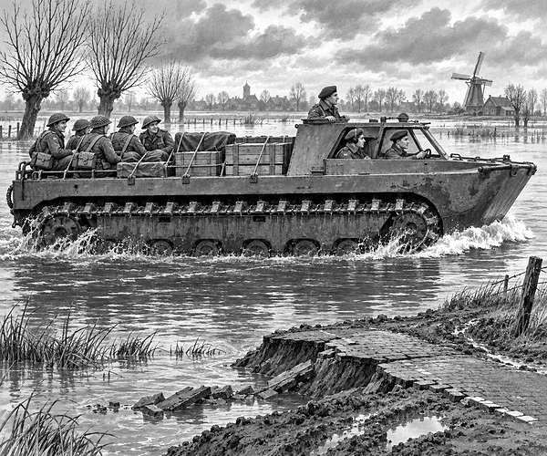

It was autumn, 1944.
World War Two was still being fought.
Allied ships needed to reach the great port of Antwerp.
But the River Scheldt led past Walcheren island.
Much of the island was flooded.
Roads vanished beneath the water.
Fields turned into deep mud.
An ordinary army lorry could not cross.
A boat could swim.
But it could not crawl out onto a broken road.
The army needed a machine that could do both.
It chose the LVT-4 Buffalo.
LVT meant Landing Vehicle Tracked.
The Buffalo looked like a large metal boat with tank tracks.
Its tracks pushed against the water to make it swim.
On land, the same wide tracks gripped mud and sand.
Vehicle fact: LVTs began as rescue machines for the swamps of the Florida Everglades. They were later adapted for military work.
The LVT-4 had a ramp at the back.
Soldiers could climb aboard quickly.
Crates could be loaded without lifting them over the high sides.
One Buffalo could carry up to twenty-four people.
Or it could carry about 2,000 kilograms of cargo.
That was useful on a flooded island.
On 5 November, eleven working Buffaloes prepared to move.
British soldiers from the Royal Scots climbed aboard.
Drivers checked the engines.
Crews secured every crate.
Then the first Buffalo entered the water.
Splash. Churn. Rumble.
Its tracks bit into the flood.
A small wave curled around its bow.
The other Buffaloes followed.
They crossed water that had swallowed the roads.
At a muddy bank, the first driver kept moving.
The front rose.
The tracks found the earth.
Grip. Climb. Drip.
The swimming vehicle became a land vehicle again.
The Buffaloes pushed towards Middelburg.
People came out to see the strange machines.
They cheered as the wet tracks clattered into town.
The German commander there agreed to surrender.
History fact: The eleven Buffaloes helped carry the Royal Scots through Walcheren’s flooded centre and deep into Middelburg.
The Buffalo was not fast.
It travelled at about 7½ miles per hour in water.
But speed was not its special trick.
It could carry people and supplies where roads had disappeared.
It could swim to town.
Then it could drive straight up the street.